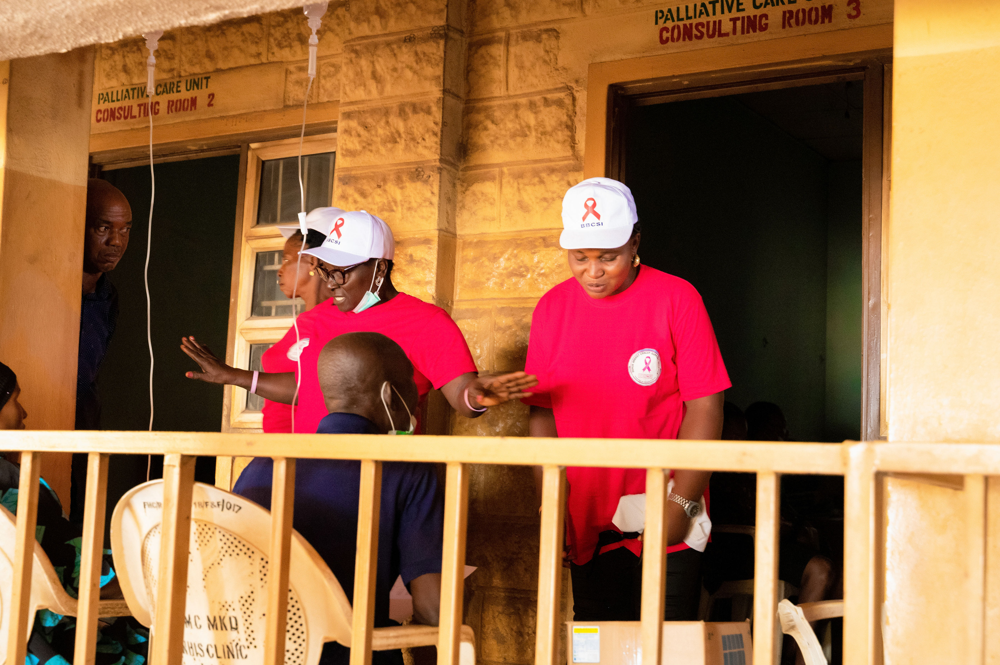
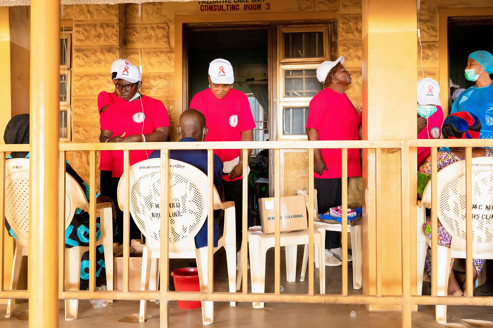
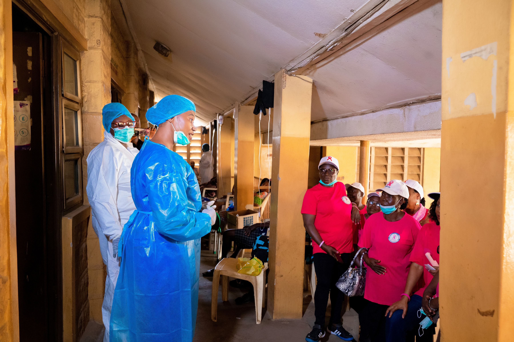
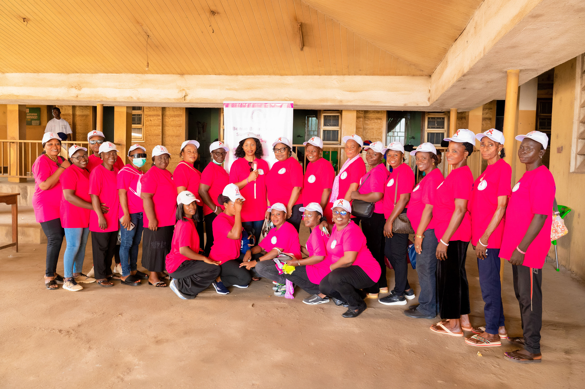

BBCSI at 10: A Decade of Impact
Day Three: Taking Hope to the Hospital – BBCSI Visits Federal Medical Centre, Wadata, to Bring Succour to Cancer Patients
Published: · Wadata, Benue State · BBCSI Communications Team

For the Benue Breast Cancer Support Initiative (BBCSI), celebrating ten years of advocacy, compassion and commitment to the fight against breast cancer goes beyond ceremonies and festivities. It is, above all, about touching lives, offering hope and standing in solidarity with those whose daily realities reflect the very reason the organisation exists.
Day Three of the 10th anniversary celebration brought this commitment to life as BBCSI delegates paid a compassionate visit to the Federal Medical Centre (FMC), Wadata, on Oncology Day, to identify with patients undergoing chemotherapy and offer them encouragement and support. It was a visit that brought the anniversary celebration face-to-face with the realities of cancer care and the courage of patients navigating the difficult journey of treatment.
A Sobering Reality Behind the Hospital Walls
While the purpose of the visit was to bring succour and encouragement to patients, the experience left a deep impression on the visiting delegates. The sight of patients receiving chemotherapy in a hospital hallway, seated on ordinary plastic chairs, was particularly disturbing and heartbreaking. For the delegates, witnessing patients undergo such physically and emotionally demanding treatment under these circumstances was a sobering reminder of the challenges confronting cancer patients and the healthcare system in our part of the world.
Chemotherapy is already a demanding experience, often accompanied by physical discomfort, emotional distress and financial pressure. The need for patients to receive treatment in an environment that offers adequate comfort, privacy and dignity cannot be overemphasised.
The experience reinforced BBCSI’s conviction that cancer care must be about more than administering medication. It must also recognise the dignity, comfort and emotional well-being of every patient.


Celebrating the Unsung Heroes of Oncology Care
Amid the challenging conditions, one group stood out for special recognition: the oncology nurses on duty. The BBCSI delegation expressed deep appreciation for the dedication and commitment of the nurses, who continued to provide care and support to patients despite the obvious limitations in their working conditions. Their ability to do so much with so little was both remarkable and deserving of commendation.
Working under challenging circumstances, these healthcare professionals remain at the frontline of cancer care, offering not only clinical assistance but also reassurance, encouragement and human compassion to patients at vulnerable moments in their lives. BBCSI applauded their resilience, professionalism and unwavering dedication, recognising that the contribution of oncology nurses to the cancer care journey is invaluable.
The visit also highlighted the importance of providing healthcare workers with the necessary facilities, equipment and resources to deliver quality services to patients.
Bringing Succour and Renewing Hope
The primary objective of the visit was to identify with patients undergoing chemotherapy, encourage them and remind them that they are not alone in their journey. For BBCSI, supporting people affected by breast cancer means standing beside them through the difficult moments, listening to their experiences and helping to create an environment where they feel seen, valued and supported.
The delegation’s presence was a practical expression of the organisation’s longstanding belief that beyond awareness campaigns and public advocacy, there must be genuine human connection with those living with cancer.
Every patient deserves compassion.
Every patient deserves dignity.
And every patient deserves hope.

A Call for Improved Cancer Care Facilities
The experience at the Federal Medical Centre also brought into sharper focus the need for improved oncology facilities and a more patient-friendly environment for cancer treatment. The sight of patients receiving chemotherapy in a hallway raises important concerns about the availability of adequate treatment spaces and the overall experience of patients accessing oncology services.
BBCSI believes that patients undergoing chemotherapy deserve a conducive environment that provides:
- Comfort
- Privacy
- Safety
- Dignity
The organisation also recognises the need for continued investment in oncology infrastructure, adequate staffing, essential medical supplies and improved support systems for both patients and healthcare professionals. These are important considerations in the collective effort to improve cancer care and outcomes.
Ten Years of Compassion, Ten Years of Standing Together
As BBCSI marked its tenth anniversary, the visit to the Federal Medical Centre served as a powerful reminder of the organisation’s purpose. The anniversary is not merely a celebration of ten years of existence; it is a reaffirmation of a mission built on compassion, advocacy, support and the determination to make a difference in the lives of people affected by breast cancer.
Day Three may have exposed the difficult realities of cancer treatment, but it also revealed the extraordinary courage of patients and the dedication of healthcare professionals who continue to serve despite challenging circumstances.
BBCSI celebrates every cancer warrior, honours the healthcare professionals who care for them and renews its commitment to advocating for better cancer awareness, support and treatment facilities. Because behind every cancer diagnosis is a human being deserving of care, dignity, compassion and hope.
#BBCSI@10: Celebrating the Journey, Strengthening the Mission, Inspiring Hope!